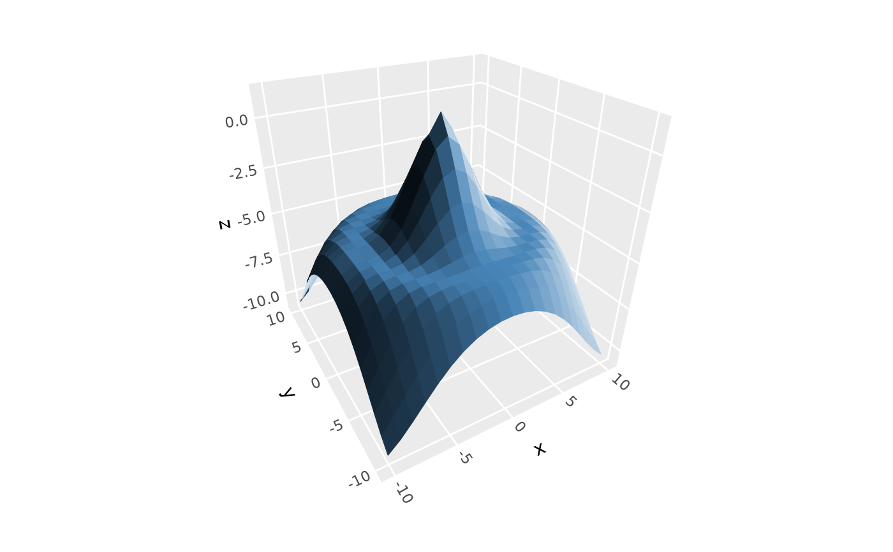
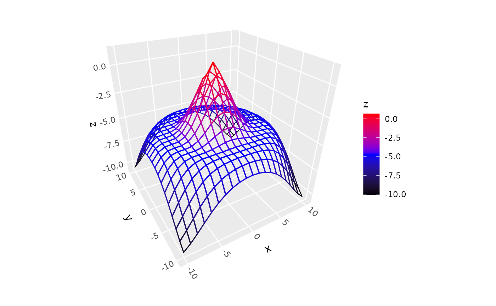
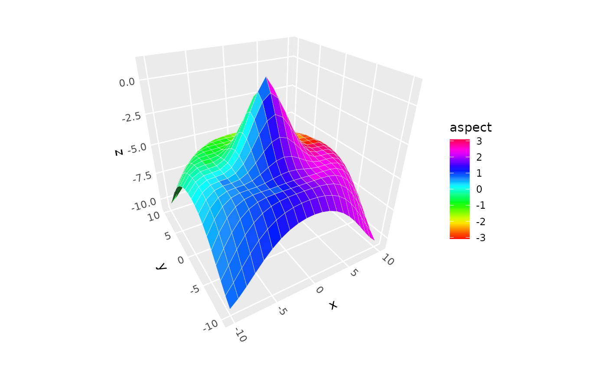
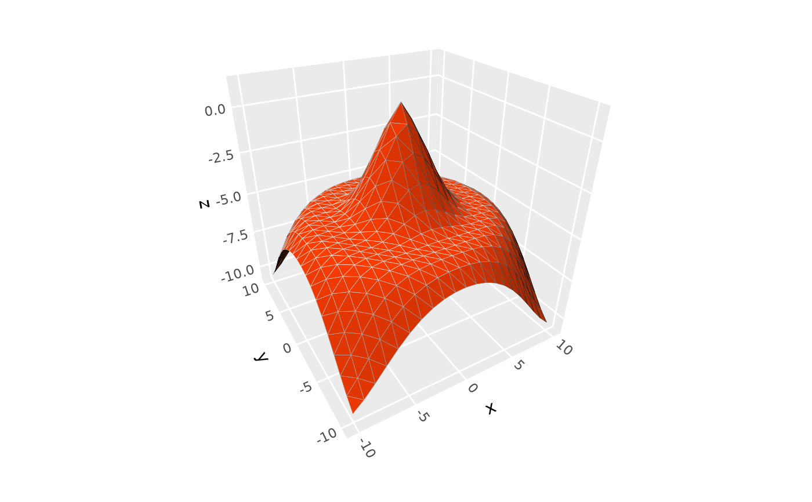
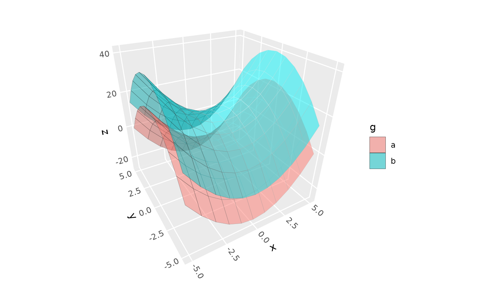

Creates 3D surfaces from regularly gridded data (like elevation maps). The data must be on a regular, complete grid where every combination of x and y values appears exactly once.
Usage
geom_surface_3d(
mapping = NULL,
data = NULL,
stat = StatSurface3D,
position = "identity",
...,
grid = "quad",
light = NULL,
cull_backfaces = FALSE,
sort_method = NULL,
force_convex = TRUE,
scale_depth = TRUE,
na.rm = FALSE,
show.legend = NA,
inherit.aes = TRUE
)
stat_surface_3d(
mapping = NULL,
data = NULL,
geom = GeomPolygon3D,
position = "identity",
...,
grid = "quad",
light = NULL,
cull_backfaces = FALSE,
sort_method = NULL,
force_convex = TRUE,
scale_depth = TRUE,
na.rm = FALSE,
show.legend = NA,
inherit.aes = TRUE
)Arguments
- mapping
Set of aesthetic mappings created by
aes(). This stat requires thex,y, andzaesthetics.- data
The data to be displayed in this layer. Must contain x, y, z columns representing coordinates on a regular grid.
- stat
The statistical transformation to use on the data. Defaults to
StatSurface3D.- position
Position adjustment, defaults to "identity". To collapse the result onto one 2D surface, use
position_on_face().- ...
Other arguments passed on to the the layer function (typically GeomPolygon3D), such as aesthetics like
colour,fill,linewidth, etc.- grid
Character specifying desired surface grid geometry: either
"quad"(the default) for a rectangular grid,"tri1"for a grid of right triangles with diagonals running in one direction, or"tri2"for a grid of right triangles with the opposite orientation. Triangles produce a proper 3D surface that can prevent lighting artifacts in places where a surface curves past parallel with the sight line.- light
A lighting specification object created by
light()(see that function for details), orNULLto disable shading. Specify plot-level lighting incoord_3d()and layer-specific lighting ingeom_*3d()functions.- cull_backfaces, sort_method, force_convex, scale_depth
Advanced polygon rendering parameters. See polygon_rendering for details.
- na.rm
If
FALSE, missing values are removed.- show.legend
Logical indicating whether this layer should be included in legends.
- inherit.aes
If
FALSE, overrides the default aesthetics.- geom
The geometric object used to display the data. Defaults to
GeomPolygon3D.
Aesthetics
Requires the following aesthetics:
x: X coordinate
y: Y coordinate
z: Z coordinate (elevation/height)
Computed variables
The following computed variables are available via after_stat():
x,y,z: Grid coordinates and function valuesnormal_x,normal_y,normal_z: Surface normal componentsslope: Gradient magnitude from surface calculationsaspect: Direction of steepest slope from surface calculationsdzdx,dzdy: Partial derivatives from surface calculation
See also
stat_function_3d() for surfaces representing mathematical functions;
stat_smooth_3d() for surfaces based on fitted statistical models;
stat_pillar_3d() for terraced column-like surfaces;
geom_polygon_3d() for the default geom associated with this layer.
Examples
# simulated data and base plot for basic surface
d <- dplyr::mutate(tidyr::expand_grid(x = -10:10, y = -10:10),
z = sqrt(x^2 + y^2) / 1.5,
z = cos(z) - z)
p <- ggplot(d, aes(x, y, z)) + coord_3d()
# surface with 3d lighting
p + geom_surface_3d(fill = "steelblue", color = "steelblue", linewidth = .2,
light = light(mode = "hsl", direction = c(1, 0, 0)))

# mesh wireframe (`fill = NULL`) with aes line color
p + geom_surface_3d(aes(color = z), fill = NA,
linewidth = .5, light = light(color = FALSE)) +
scale_color_gradientn(colors = c("black", "blue", "red"))

# use after_stat to access computed surface-orientation variables
p + geom_surface_3d(aes(fill = after_stat(aspect))) +
scale_fill_gradientn(colors = rainbow(20))

# triangulated surface (can prevent lighting flaws)
p + geom_surface_3d(fill = "#9e2602", color = "black", grid = "tri1")

# use `group` to plot data for multiple surfaces
d <- expand.grid(x = -5:5, y = -5:5)
d$z <- d$x^2 - d$y^2
d$g <- "a"
d2 <- d
d2$z <- d$z + 15
d2$g <- "b"
ggplot(rbind(d, d2), aes(x, y, z, group = g, fill = g)) +
coord_3d() +
geom_surface_3d(color = "black", alpha = .5, light = NULL)

# terrain surface with topographic hillshade and elevational fill
ggplot(mountain, aes(x, y, z, fill = z, color = z)) +
geom_surface_3d(light = light(direction = c(1, 0, .5),
mode = "hsv", contrast = 1.5),
linewidth = .2) +
coord_3d(ratio = c(1, 1.5, .75)) +
theme_light() +
scale_fill_gradientn(colors = c("darkgreen", "rosybrown4", "gray60")) +
scale_color_gradientn(colors = c("darkgreen", "rosybrown4", "gray60")) +
guides(fill = guide_colorbar_3d())